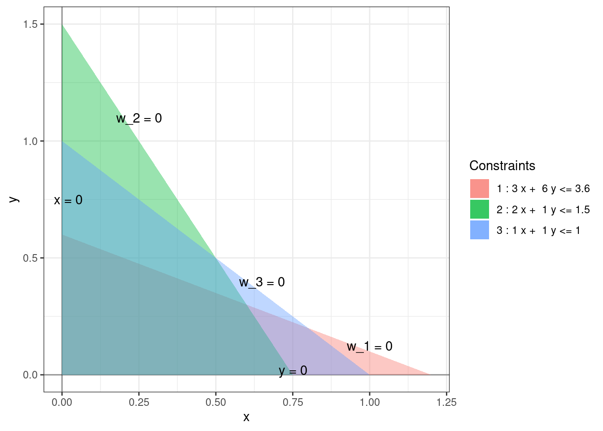
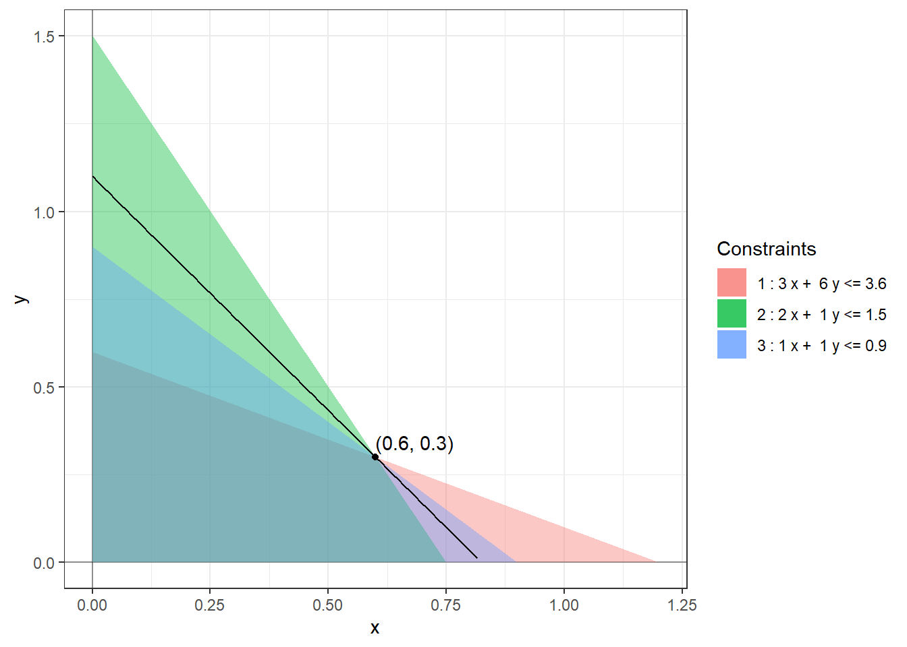

Chapter 2 Standard Linear Program
We will describe the simplex method for solving a special kind of linear program called standard linear program. We will see later that every linear program can be standardized (Chapter 6) and hence this method is sufficient for solving any linear program.
Definition 2.1 A standard linear program is an optimization problem of the following form: \[\begin{equation} \begin{array}{lrrrrrrrrr} \mbox{maximize: } & c_0 & + & c_1 x_1 & + & \dots & + & c_n x_n & \\ \mbox{subject to: } & & & a_{11} x_1 & + & \dots & + & a_{1n} x_n & \leq & b_1 \\ & & & a_{21} x_1 & + & \dots & + & a_{2n} x_n & \leq & b_2 \\ & & & & & \vdots & \\ & & & a_{m1} x_1 & + & \dots & + & a_{mn} x_n & \leq & b_m \\ & & & x_1, & x_2, & \dots &, & x_n & \geq & 0 \end{array} \tag{2.1} \end{equation}\] where \(c_i\), \(a_{ij}\), and \(b_j\) are real constants. The variables \(x_1, \dots, x_n\) are called decision variables. A tuple \((x_1, \dots, x_n)\) that satisfy all the constraints is called a feasible solution and the set of all feasible solutions is called the feasible region.
Example 2.1 Equation (1.2) is an example of a standard linear program with 2 decision variables and 3 constraints. The feasible region is a quadrilateral with vertices \((0,0)\), \((0.75, 0)\), \((0.6, 0.3)\), and \((0, 0.6)\).
Definition 2.2 For each constraint of the standard linear program (2.1), we introduce a slack variable by subtracting the LHS from the RHS as follows. \[\begin{equation} \begin{array}{lrrrrrrrrr} w_1 & = & b_1 & - & a_{11} x_1 & - & \dots & - & a_{1n} x_n \\ w_2 & = & b_2 & - & a_{21} x_1 & - & \dots & - & a_{2n} x_n \\ & & & & & \vdots & \\ w_m & = & b_m & - & a_{m1} x_1 & - & \dots & - & a_{mn} x_n \end{array} \tag{2.2} \end{equation}\]
We can think of the slack variable \(w_i\) as measuring the slackness in the \(i^{th}\) constraint. The \(i^{th}\) constraint is strictly met exactly when \(w_i\) is zero. Using the slack variables, the linear program (2.1) can be succinctly rewritten as: \[\begin{equation*} w_1, \dots, w_m, x_1, \dots, x_n \geq 0. \end{equation*}\]
Example 2.2 The slack variables for the linear program (1.2) are as follows: \[\begin{equation*} \begin{array}{rlllllll} w_1 & = & 3.6 & - & 3x & - & 6y \\ w_2 & = & 1.5 & - & 2x & - & y \\ w_3 & = & 1 & - & x & - & y. \end{array} \end{equation*}\] In terms of these slack variables, the constraints can be rewritten as \(x, y, w_1, w_2, w_3 \ge 0\) and the boundaries of the feasible region are given by \(x = 0, y = 0, w_1 = 0, w_2 = 0, w_3 = 0\).

Definition 2.3 A basic feasible solution (BFS) to the standard linear program (2.1) is defined as a feasible solution at which at least \(n\) decision or slack variables are zero. A BFS where exactly \(n\) decision or slack variables are zero is called non-degenerate. A BFS where more than \(n\) basic or decision variables are 0 is called degenerate. At a non-degenerate BFS, the \(n\) variables that equal 0 are called non-basic and the remaining \(m\) variables are called basic. At a degenerate BFS, we choose some \(n\) vanishing variables to be non-basic and call the rest of the variables basic.
The basic feasible solutions are precisely the solutions obtained by changing \(n\) or more inequalities to equalities and solving the resulting simultaneous system of equations. As there are \(n\) variables, we need at least \(n\) linear equations in our system for the solution to be a single point. A degeneracy occurs when more than \(n\) equations have a single solution, for example, when three lines in \(\mathbb{R}^2\) or four planes in \(\mathbb{R}^3\) intersecting at a single point. It is useful to think of the non-degenerate basic feasible solutions as vertices of the feasible region. The degenerate BFS do not have a nice geometric description.
Exercise 2.1 Show that if \(k < n\) then the solution set of a system of \(k\) linear equations in \(n\) variables cannot be a single point.
Example 2.3 The feasible region for the linear program (1.2) has four non-degenerate basic feasible solutions: \((0,0)\), \((0.75, 0)\), \((0.6, 0.3)\), and \((0, 0.6)\). and the optimal solution is attained at the BFS \((0.6, 0.3)\). At the origin, the non-basic variables are \(x, y\) and the basic variables are \(w_1, w_2, w_3\). At the optimal solution, the non-basic variables are \(w_1, w_2\) and the basic variables are \(x, y, w_3\). If we replace the constraint \(x + y \le 1\) with \(x + y \le 0.9\) then the BFS \((0.6, 0.3)\) becomes degenerate as here three (slack) variables \(w_1, w_2, w_3\) are zero.

It turns out that it is sufficient to search for optimal solutions within the set of basic feasible solutions, which is finite, as made precise by the following theorem.
Theorem 2.1 (Fundamental theorem of linear programming) For a standard linear program, exactly one of the following holds:
- There is no feasible solution. In this case, we call the linear program infeasible.
- The objective value can grow arbitrary large on the feasible region. In this case, we call the linear program unbounded.
- There is an optimal solution. In this case, we can further say that then there is a basic feasible solution which is optimal.
We will assume this theorem without proof. The hardest step in the proof is showing that some basic feasible solution is optimal (if an optimal solution exists) when there are degenerate basic feasible solutions.
Exercise 2.2 Find an upper bound on the set of basic feasible solutions for a standard linear program with \(n\) decision variables and \(m\) equations.